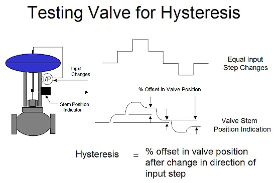
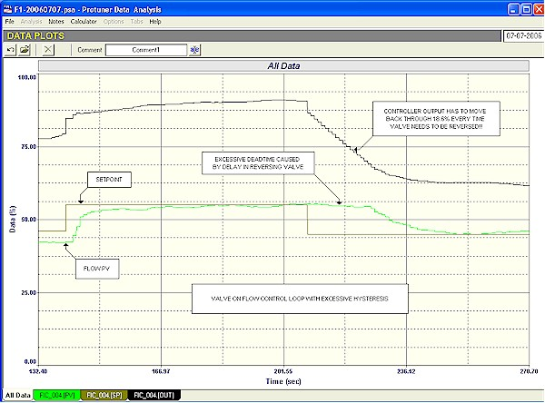
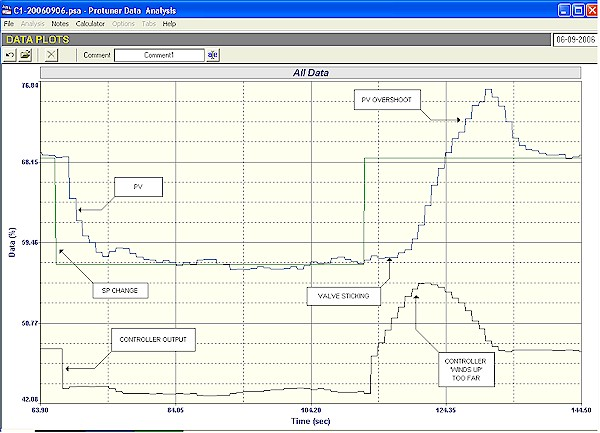
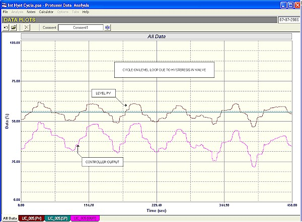
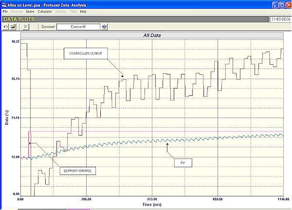

|
| [Home] [About us] [Contact us] [Training] [Optimisation services] [Protuner] |
| [Loop signatures] [Case histories] [Continuous loop performance monitoring] |
|
Control Loop Case History 92 THE CONTROLLER HAS GONE OUT OF TUNE! "The controller has gone out of tune!" How often does this plaintiff cry ring out in plants when a feedback loop ceases to perform well? Immediately everyone in the plant blames the controller's tuning. I believe this is one of the worst of the many common fallacies that exist when dealing with peoples' perceptions of feedback control. It seems pretty obvious to me that it would be almost impossible for a controller's tuning to change by itself. Its not like the tuning of a string instrument, which can change with time and with differing ambient conditions. Tuning settings are just numerals generally inserted in registers in the software, and unless the computer system has gone "on the blink" they cannot just change by themselves. Therefore if the control was working well and then suddenly the control deteriorates, then something other than the tuning must have changed in the loop. Now a controller is tuned to match the dynamics of the total process, and "the total process" refers to everything in the loop external to the controller. Apart from the actual plant equipment making up the process, this also includes the valve and the measuring transmitter system. From experience, generally over 80% of problems arising in loops are due to valve problems. However problems are also sometimes found in the measuring system, and sometimes something may have changed in the actual process. When a problem occurs in a control loop that was previously working well, the golden rules are: First check the valve. If that is fine, then check the measuring system, and if there is no problem there, then check the process. Never ever change the tuning unless there is a good and valid reason to do so. In fact, in one plant I have been dealing with, it requires management permission in writing to adjust tuning, and this is only granted if sufficient justification has been proved to exist. The examples given in this article exhibit five loops with problems that I encountered in a distillation plant where I recently performed some optimisation. In all of these cases, the people in the plant were either completely unaware of the problems that existed, or else thought they were due to bad tuning. The first few examples show some of the control problems that can arise from excessive valve hysteresis. Hysteresis in valves has been extensively dealt with in the Part 1 Loop Signature series (No. 7), and to summarise, hysteresis is generally either caused by excessive static friction, or by mechanical play, or by a combination of both. Figure 1 illustrates how hysteresis is determined. In general a valve should not have hysteresis exceeding 1%.  Figure 1 Hysteresis has different effects on self-regulating processes, and on integrating processes. In the former class of processes it slows down the control and increases the control variance, but it does not cause continuous cycling. In the latter case of integrating processes, continuous cycling will always be encountered, except in the rare instances where the I (integral) term is not used in the controller. It should be noted, and of particular interest, is the fact that on reversing a valve, the output of the controller has to move completely back through the hysteresis band, before the valve can physically start moving in the opposite direction. Figure 2 is of a flow loop in automatic where a setpoint change has firstly been made up, and then when the flow had settled out at the new setpoint, the setpoint was moved back down to its original value. It can be clearly seen that although the controller's output started moving immediately on the second setpoint change, it took quite a long time before the flow itself starts changing. What has happened is that the valve has excessive hysteresis, and it was necessary for the controller output to reverse through approximately 18.6% before the valve started moving. This obviously will affect control performance and will increase the control variance. In certain instances it could cause major problems in critically important control loops.  Figure 2 Figure 3 shows something fairly similar. This was a cascade secondary flow loop on the top temperature control of a distillation column. In this particular case the valve was only "sticky" when opening. In the figure it can be seen that when the setpoint was decreased, the flow came down to the new setpoint fairly slowly, but without any apparent problem. However on increasing the setpoint the valve didn't move and stuck. The integral action in the controller then took over and ramped up trying to eliminate the error. Eventually there was enough energy in the actuator to get the valve to break free. However by then the controller's output had partially "wound up", and had moved too far, resulting in a large overshoot on setpoint. This occurred on every occasion that the valve had to reverse to the opening direction. In this particular application with a relatively slow primary temperature loop, it is not serious, but it could cause problems in other applications.  Figure 3 When loops cycle in automatic about 98% of people are convinced that it is definitely due to bad tuning, and it is often very difficult to convince them otherwise. In fact bad tuning is in fact only one of quite few reasons why loops can be cycling. The last two examples illustrate this point. As mentioned earlier, hysteresis on integrating processes always results in continuous cycling when using P+I control. Figure 4 gives an example of this on a bottom level control in a distillation column. In this case it was quite serious as this loop interacted with several other control loops, and resulted in cycles appearing in several places.  Figure 4 One of the more unusual reasons why a loop may cycle is because of signal "aliasing". An aliased signal is where the original signal has been distorted, which could be due to various reasons. One of these is when a signal coming in from the field has some noise on it. (We define "noise" as a random fluctuation in the signal around a mean level. Typically it may be caused by things going on in the process, like ripples in a tank level, or it may be in the measuring system, like turbulence in a flow). The signal complete with noise arrives at the controller's PV input. In most instances the frequency components in the noise are of relatively high frequencies, typically with periods less than a second. Digital industrial feedback controllers have scan rates that are generally quite slow. Many default to a 1 second scan rate. However some are slower. Some makes are set to about 2 seconds, and some are even longer. To give an extreme example, a particular well known make of DCS from Japan has scan rates that vary according to the speed of the process. This is judged by the value of the integral values set in the control block when the controller is tuned for a particular process. (The detailed reasons for this are beyond the scope of this article. However it is mainly to allow more accurate integral calculations.) If the integral value inserted in the controller exceed a value of 1,200 seconds/repeat, the scan rate of the control block is automatically adjusted to 32 seconds. In other words the control algorithm is then only calculated at a rate of less than twice per minute! What then happens is that every time it does its calculation the controller switches on, looks at the PV signal, performs the computation and sets the new value in the controller's output. Now the value of the PV as seen by the controller will be the actual value at that instant of time. The resulting signal then that the controller works on ends up as a signal with the noise on it with the same amplitude as the original signal, but now with very much slower frequency components in it. This because the frequencies in the aliased signal have mainly resulted from the scan rate of the controller. In other words the original signal with high noise frequencies has been changed into a signal with much lower noise frequencies in it. If the controller had a very fast scan rate the original higher frequencies in the PV signal would have passed straight through it (via the P gain amplifier) and out to the valve. Pneumatically actuated valves (which are used in the vast majority of control loops world-wide) have quite a bit of "inertia" or natural damping built into them, because of relatively large air volumes, and they will not be able to respond to high frequency signals coming in. However if such a signal is first aliased in the controller to give a signal with slower frequencies, then it is very possible that the valve can respond to these lower frequencies, and follow them. This will result in shortening the valve life, and if the process is fast enough, it too may start responding to the low frequency signals, and make it appear as if the loop has gone unstable. This will of course also result in increased control variance. The example shown in Figure 5, is similar. The figure shows a closed loop test with a setpoint change being made on the control of a bottom level in a distillation column. These "bottoms" are used as the feed to the next column. The level is controlled via a control valve on the output of the pump which feeds the downstream column Now in this case keeping the level constant was of secondary importance to keeping the flow out of the bottom as constant as possible. The process people would far rather have had fluctuations in the level, than in the flow. Therefore the level controller has been tuned relatively slowly as can be seen in the control response in the figure.  Figure 5 A strange little cycle with an amplitude of 0.8% and period of 20 seconds can be seen on the PV of the level. No one in the plant was quite sure where this cycle was coming from. There was a reciprocating compressor used somewhere in the system, and I have seen very similar cycles on flows being caused by such a device, but I have no idea on how it could appear on the level PV. In any event the cycle was entering the level controller which was in one of the Japanese DCS systems discussed earlier. The tuning parameters for the loop was a P gain of 8, and an I setting of 1,012 seconds/repeat. This integral value resulted in the controller's scan rate being automatically set to 16 seconds. The tuning and scan rate resulted in the little cycle on the controller being aliased, and resulted in a cycle on the controller's output with an amplitude of 8% with a dominant frequency component in it with a period of 67 seconds, which caused a strong cycle. This can be seen in the figure. The valve will easily follow such a slow cycle. However in this case it will not affect the level control, which can not react quickly enough to the cycle. However it would definitely cause unnecessary, and really undesirable wear on the valve, thus shortening its life, and of course the last thing one wants is for the feed to a column to have such a cycle on it. You really need the inflow to be constant and very steady. The solution to this would be to ideally find out exactly how the cycle was getting onto the level measurement, and then try and eliminate it there at its source, but this can be very time consuming and possible expensive. The other alternative is to filter the PV signal to prevent the cycle from getting into the controller. Now I have often written about the undesirable effects and problems that can be encountered with filtering, but sometimes you have to use them to overcome bigger problems, such as this one. In actual fact the control of slow integrating processes are not so badly affected by filtering as are fast self-regulating ones, and it is possible to get away with relatively large filters without too bad an effect on the control. In this case a 50 second filter eliminated the cycle, and resulted in a smooth control allowing a relatively constant feed to the next column. Hopefully this article has shown some examples of problems loops where solutions have been found that have nothing to do with retuning the loop. Michael
Brown is a specialist in control loop optimisation, with many years of
experience in process control instrumentation. His main activities are
consulting, and teaching practical control loop analysis and
optimisation. He gives training courses which can be held in clients'
plants, where students can have the added benefit of practising on live
loops. His work takes him to plants all over South Africa, and also to
other countries. He can be contacted at: |